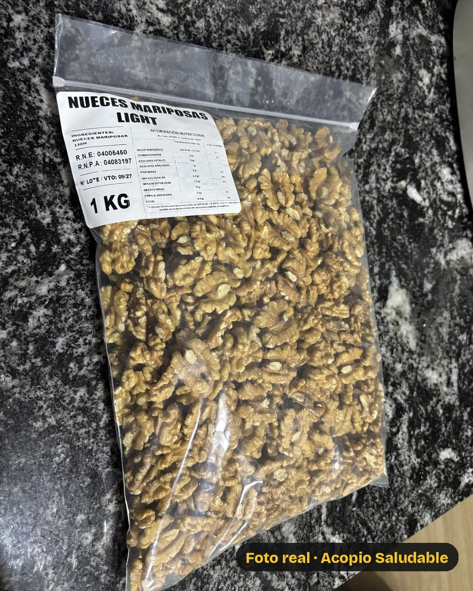

Acopio Saludable
3 kilos de frutos secos
para todo diciembre
Mix
clásico
con cajú
clásico
con cajú
Mix clásico con cajú
1 kg
1 kg

Nuez mariposa light
1 kg
1 kg

Pasas sin semilla
1 kg
1 kg
$41.000
Combo Alacena
3 kg en total
3 kg en total
Pedila: WhatsApp 3541 51-9630
Te lo llevamos a tu casa en Carlos Paz